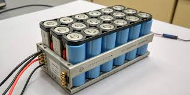

01
THERMAL MANAGEMENT
Predictive Thermal Management of EV Battery Modules using Machine Learning
CFD and Machine Learning based predictive thermal management of lithium-ion battery modules for efficient cooling and enhanced battery performance.
View Case Study